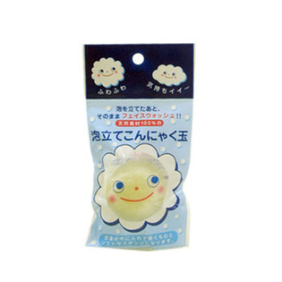

返回列表
产品名称：泡立てこんにゃく玉

吉鷹金箔本舗 泡立てこんにゃく玉 ＿
メーカー 吉鷹金箔本舗
JANコード 4518753040113
商品の特徴
こんにゃくマンナン特有の網目状構造の繊維により、せっけんや洗顔フォームの成分が絡まりやすく、軽く揉むだけで簡単に泡が立ちます。
成分・分量
こんにゃくマンナン
用法及び用量
(1)お湯の中で軽くもむとソフトなスポンジになります。
(2)せっけんか洗顔フォームをつけて、軽くもんでください。
(3)泡が立ったら、そのまま撫でるように顔を洗ってください。
(4)使用後は強く絞らずにやさしく水を切り、冷蔵庫に保管するか風通しのよいところで乾燥させてください。